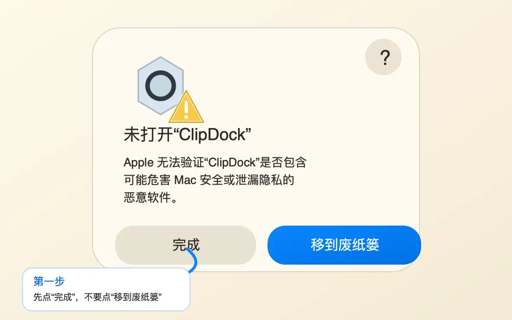
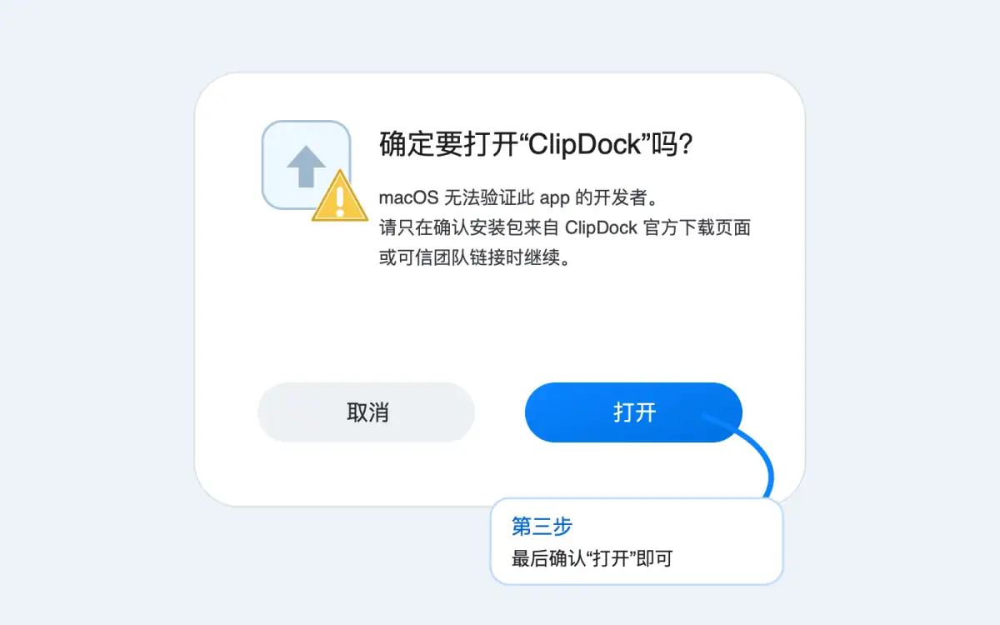

在提示窗口中点击“完成”
看到“未打开 ClipDock”时，先点击左侧的“完成”。不要点击“移到废纸篓”，否则 app 会被移除。

首次打开帮助
这是 macOS 的安全保护提示。当前如果你拿到的是未经过 Apple Developer ID 公证的测试版或开源构建，第一次打开时可能需要手动允许一次。
请只在确认安装包来自 ClipDock 官方下载页、GitHub Releases，或你信任的团队成员时继续。如果来源不确定，请不要绕过提示，直接删除并重新下载。
下面的步骤不需要使用终端，也不需要关闭 macOS 的系统安全保护。不同 macOS 版本的按钮文案可能略有差异，例如“仍要打开”“Open Anyway”或“打开”。
看到“未打开 ClipDock”时，先点击左侧的“完成”。不要点击“移到废纸篓”，否则 app 会被移除。

打开 Mac 的“系统设置”，进入“隐私与安全性”。向下找到与 ClipDock 相关的拦截提示，然后点击“仍要打开”。如果没有看到这个按钮，请再次从“应用程序”里打开一次 ClipDock，再回到这里查看。
macOS 可能会再次弹出确认窗口，并要求输入本机登录密码或使用 Touch ID。确认来源可信后，点击“打开”。之后再打开 ClipDock 时，通常就不会重复出现同样的拦截。

macOS 会使用 Gatekeeper 检查从网络下载的 app。对于 Mac App Store 之外分发的软件，Apple 推荐开发者使用 Developer ID 签名，并提交给 Apple 公证。经过签名和公证的版本，用户第一次打开时会少很多额外步骤。
ClipDock 在没有开发者签名的测试构建中可能无法通过这项检查，因此 macOS 会要求用户手动确认。我们会在具备 Developer ID 签名与公证条件后，优先提供更顺滑的安装体验。